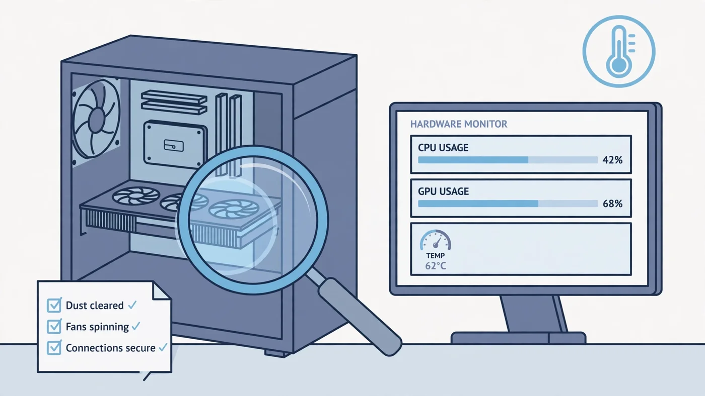

How to Check a Used PC for Bottlenecks Before Buying
The short answer to how to check a used PC for bottlenecks before buying is that you can do it in about 20 minutes, with a free overlay and one demanding game. Load a game, watch GPU usage, per-core CPU usage, RAM usage and temperatures, and the numbers will tell you which part is the limit — before any money changes hands. A balanced used PC shows the GPU working hard while the CPU keeps up; a bad deal shows a CPU pinned at full load while the GPU idles, stuttering frame times, or temperatures that climb until the parts slow down. This guide walks through the exact checks, in order, so you can spot the problem and either negotiate the price down or walk away.

How to Check a Used PC for Bottlenecks Before Buying: The Short Answer
A used PC bottleneck check has two halves: the parts on paper, and the parts under load. On paper, you verify that the machine actually contains the CPU, GPU, RAM and storage the listing promises, and you run that pairing through a bottleneck calculator to see whether it is balanced for your resolution. Under load, you play a demanding game for 10 to 15 minutes with an overlay showing GPU usage, per-core CPU usage, RAM usage, frame time and temperatures — and you read the pattern, not a single number.
The healthy pattern is simple: the GPU sits near full load, the CPU has headroom, and frame times stay steady. The unhealthy patterns are just as clear: a CPU pinned near full load on one or two cores while the GPU waits, RAM filled to the edge, frame-time spikes you feel as stutter, or temperatures climbing until the hardware throttles itself. Any one of those is a reason to renegotiate — and a seller who will not let you run the test is a reason to walk away. Our bottleneck check guide explains the same readings for a PC you already own.
Before You Meet the Seller: Check the Parts on Paper
Most bad used-PC deals are decided before you ever see the machine, because the buyer never checked whether the parts make sense together. Ask the seller for the exact model names — not "i7 processor" or "RTX graphics card" but the full names, such as Core i7-10700K or RTX 3060 — plus the RAM capacity, speed and stick count, the storage type and capacity, the power supply wattage, and the motherboard model. A listing that hides those details is hiding something.
Once you have the exact parts, run the CPU and GPU through the PC Bottleneck Calculator at the resolution you actually play at (see its methodology page for what the estimate means). A pairing that is heavily CPU-limited at 1080p is not automatically a bad buy — it may be fine at 1440p, where the GPU does more of the work — but it changes what the machine is worth to you. Also ask three direct questions before the visit: was the graphics card used for crypto mining, has any part been replaced or repaired, and is Windows activated and licensed. Honest sellers answer plainly; evasive answers are information too. Finally, check the age of the platform: a machine that cannot meet Microsoft's Windows 11 system requirements has a shorter useful life and a lower value, and a CPU on a dead socket with slow single-channel RAM and a proprietary power supply is a machine you cannot fix cheaply later — the same trap our prebuilt PC bottleneck guide warns about.
Step 1 — Verify the Specs Match the Listing
The first thing to do in front of the machine is confirm it is the machine you were promised. Open Settings > System > About to see the processor and installed memory, then open Task Manager > Performance to inspect the processor, memory, storage drives and graphics adapter. Check the graphics adapter by name — integrated graphics and a discrete graphics card can look similar in a listing but perform very differently — and confirm the storage is the SSD the listing claimed, not a slow mechanical drive.
Open the case, with the PC off and unplugged, and count the RAM sticks: one 16GB stick in single-channel mode performs noticeably worse in games than two 8GB sticks in dual channel, and the listing almost never says which it is. Check the power supply label for wattage and connectors, and look for dust-clogged fans and heatsinks. If anything does not match the listing — a weaker CPU, less RAM, a different card — stop and renegotiate, because the price was set for a different machine. Our single vs dual channel guide explains why the stick count matters so much.
Step 2 — Run a Real Game and Read the Usage Bars
This is the heart of the used PC bottleneck check, and it needs a real game — not a stress test, which pushes one component to its limit and tells you nothing about how the parts work together. Bring a demanding game you already own on a USB drive, or use a free game with a built-in benchmark, and install a free overlay first: MSI Afterburner works with any GPU brand and shows CPU and GPU usage, temperatures, clock speeds and frame times on screen while you play.
Remove any frame-rate cap and turn V-Sync off, then play a demanding scene for 10 to 15 minutes — long enough for temperatures to settle and for throttling or instability to show up. Watch the overlay, not the FPS counter alone: the frame rate tells you the machine is slow, but the usage bars tell you why. Repeat the same scene if you change a setting, and change only one thing at a time. Our CPU vs GPU bottleneck guide explains the same reading in general terms.
Step 3 — Check CPU, GPU, RAM and Storage in One Pass
While the game runs, read the four numbers together. Each pattern points at a different limit, and the fix — and the cost — is different for each one.
- GPU near full load, CPU with headroom, frame times steady: the GPU is the limit. That is the healthy pattern for a gaming PC — the graphics card is doing the work it was bought for. Nothing to fix.
- One or two CPU cores near full load, GPU usage low, FPS barely changes when you lower the resolution: a CPU bottleneck. Watch per-core usage here, not the overall number: overall CPU usage can read modest while a game is still CPU-limited, because many games lean on a few threads.
- RAM usage near full, with stutter when you move to a new area: a RAM limit. Check the capacity in Task Manager — 8GB is tight for modern games — and whether the sticks run in dual channel at their rated speed. Our 16GB RAM guide covers what is enough.
- Long load times and hitching when assets stream in: a storage limit. Games on a mechanical hard drive, or on a nearly full SSD, stutter exactly this way. Our SSD vs HDD guide explains the difference.
- Frame-time spikes while usage looks normal: check for thermal throttling or a background program first, and read our frame time guide — a steady average FPS with wild frame times still feels choppy.
Also check the VRAM: if the game fills the card's memory, textures spill over and the frame rate collapses. Our VRAM guide covers how much memory each resolution needs. If a reading looks odd, run the same scene once more — a single strange number can be a background update or a one-off hitch.
Step 4 — Watch Temperatures and Listen for Trouble
Temperatures are the second half of the test, and used PCs fail here more often than on raw speed. A graphics card should stay under about 85°C under sustained gaming load as a rough guide, though the exact safe limit varies by model — check the manufacturer's specification for the card. A card that climbs past that and keeps rising, or whose fans run at full speed just to hold the temperature down, usually has dried thermal paste, a clogged cooler or a failing fan.
Watch the CPU temperature too, and whether clock speeds drop as the machine warms up: a processor that throttles under load is slower than its spec sheet promises, and the fix is cleaning, fresh paste or a better cooler — not a new CPU. Listen while you test: grinding or clicking fans and loud coil whine are sounds a healthy machine does not make. Our thermal throttling guide shows how to tell heat problems from a genuine CPU limit. Insist on the full 10 to 15 minutes — throttling is exactly what a short test hides.
Step 5 — Test Storage Health and RAM Stability
The last checks are the ones a quick game test cannot show: whether the storage is dying and whether the memory is stable. Run CrystalDiskInfo, a free tool that reads each drive's SMART health data, and look for warnings, reallocated sectors and power-on hours — a drive with warnings should be replaced, and one with very high power-on hours has less life left. Check that the SSD still has free space: a nearly full drive slows down and leaves no room for games or updates.
For RAM, run Windows Memory Diagnostic or MemTest86 from a USB drive; either will catch failing sticks that cause crashes, blue screens and corrupted data. Memory faults are easy to miss in a short game test because they show up randomly, not on every run. These two checks take a few extra minutes and cost nothing — if the seller will not let you run them, treat that the same as refusing the game test.
The Red Flags That Mean Walk Away
Some findings are negotiable — a dusty cooler, a single RAM stick, a drive that needs replacing — and some are not. Walk away, whatever the price, if the seller refuses any testing, if the parts do not match the listing, if the machine crashes, shows graphical artifacts or blue-screens during your test, or if the graphics card was used for mining and the seller hid it. Artifacts — flickering textures, coloured blocks, strange shapes — point at failing VRAM, and there is no cheap fix for that.
Also walk away from a machine with a proprietary power supply that cannot be replaced with a standard unit, a locked BIOS that hides RAM speed settings and CPU support, or no Windows licence when one was promised. And be careful with a "too good to be true" price on a high-end card: if the deal only makes sense when every claim is true, it probably is not. A fair used price leaves room for the fixes your test found — use each finding as a specific discount.
How to Check a Used PC for Bottlenecks Without the Seller's Games
Sometimes you cannot install a game at the seller's house — no internet, no time, or a seller who will not wait. You can still do a useful used PC bottleneck check without one. Bring a bootable USB drive with HWiNFO and CrystalDiskInfo on it, so you can run your own diagnostics instead of trusting the seller's software. Check the exact parts against the listing, check storage health and RAM capacity in Task Manager, and run the CPU and GPU through the free Bottleneck Calculator to see whether the pairing is balanced.
That gives you the paper answer, but only a real game shows how the parts behave together under load, so agree the sale on a test: pay a deposit, take the machine home, and run your own game test within the return window the seller offers. A seller who agrees to a tested sale is a seller who believes in the machine. If the seller offers no test and no return, the price should reflect that risk — and often the honest move is to keep looking.
What a Used PC Bottleneck Costs to Fix
Not every bottleneck you find is a deal-breaker — some are cheap fixes, and knowing the cost turns a test result into a price. RAM is usually the cheapest: a second matched stick for dual channel, or a move from 8GB to 16GB, removes stutter no graphics card would fix. Storage is similar: moving Windows and games to an SSD is one of the most noticeable upgrades a used PC can get, and cooling and thermal paste are cheap too.
A graphics card upgrade costs more, and it only makes sense when the GPU is genuinely the limit — check the power supply wattage and connectors and the case clearance first, because a card that does not fit or cannot be powered is a return, not an upgrade. A CPU bottleneck is the expensive one: on an old platform it often means a new motherboard and RAM as well as the chip, which is why our PC upgrade checklist and PSU guide are worth reading before you commit. Add up every fix your test found, subtract it from the asking price, and if the total is close to a better machine, buy the better machine.
Free PC Bottleneck Calculator — Estimate CPU and GPU balance for your resolution and workload: check whether your CPU, GPU or VRAM is the slow half of the frame on the PC Bottleneck Calculator (see its methodology page) before you pay for a used PC.
Conclusion
How to check a used PC for bottlenecks before buying comes down to one rule: measure the machine in front of you, in the games you actually play, before you pay for it. Verify the parts match the listing, run one demanding game for 10 to 15 minutes with an overlay, and read GPU usage, per-core CPU usage, RAM, frame time and temperatures together. A GPU working hard with a CPU that keeps up is a healthy machine; a pinned CPU, full RAM, wild frame times or climbing temperatures is a price cut or a walk-away. Add the cost of every fix to the asking price — if that total is close to a better machine, buy the better machine. The 20 minutes you spend testing is the cheapest insurance in PC buying.
Frequently Asked Questions
How do I test a used gaming PC before buying?
Run a demanding game for 10 to 15 minutes with a free overlay such as MSI Afterburner showing GPU usage, per-core CPU usage, RAM usage and temperatures. Compare the results with the expected scores for the same parts, check storage health with CrystalDiskInfo, and test the RAM with Windows Memory Diagnostic or MemTest86. Any seller who refuses a test like this is hiding something — no testing, no purchase.
How can I tell if a used PC has a CPU bottleneck?
Play a demanding game with an overlay running and watch the usage bars. If one or two CPU cores sit near full load while the GPU stays well below full load, and the frame rate barely changes when you lower the resolution, the CPU is the bottleneck. Overall CPU usage can look modest while a game is still CPU-limited, because many games lean on a few threads — so always watch per-core usage, not just the total.
What temperature should a used GPU stay under while gaming?
As a rough guide, a used graphics card should stay under about 85°C under sustained gaming load, though the exact safe limit varies by model — check the manufacturer's specification for the card. A card that climbs past that and keeps rising, or one whose fans scream at full speed to hold the temperature down, usually has dried thermal paste, clogged cooling or a failing fan, and the temperature alone is reason to renegotiate or walk away.
Should I buy a used PC that was used for crypto mining?
A mined card is not automatically a bad buy, but it deserves a bigger discount and a harder test. Mining means long hours at sustained load, which wears fans and thermal paste first. Ask directly about mining history, run a longer gaming test of at least 20 to 30 minutes, watch for artifacts, crashes or rising temperatures, and check the fans for noise. If the seller will not answer the question or will not let you test, walk away.
Can I check a used PC for bottlenecks without installing a game?
You can get part of the answer without a game: check the exact parts against the listing, run the CPU and GPU through the free Bottleneck Calculator to see whether the pairing is balanced, check storage health and RAM capacity in Task Manager, and confirm the parts match what was advertised. But only a real game shows how the parts behave together under load, so bring a game you own on a USB drive, or use a free game with a built-in benchmark, for the final check before you pay.
Sources
Official documentation referenced in this guide:
- Intel: Locate and Resolve CPU-GPU Bottlenecks (per-core CPU usage vs GPU usage patterns)
- NVIDIA: FrameView (frame time, FPS, CPU and GPU utilization capture)
- Microsoft: Windows 11 Specifications (system requirements and PC Health Check)
- MSI: Afterburner (free on-screen overlay for CPU/GPU usage, temperatures and frame times)
- HWiNFO (detailed hardware monitoring: per-core usage, temperatures, power and voltages)
- Crystal Dew World: CrystalDiskInfo (SMART storage health readings)
- PassMark: MemTest86 (bootable memory stability testing)